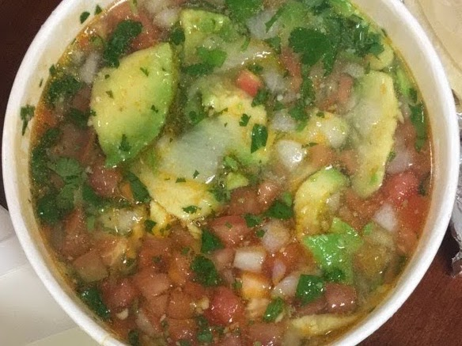

Jorge's Chicken Soup Mexico City Style Copycat:
My fav mexican restaurant from when I lived in California and I missed it so this is my recreation
Number of Servings:
5Ingredients
- 2 shredded chicken breasts or 1 shredded rotisserie chicken
- 32 oz chicken broth
- 0.5 diced onion
- 2 diced medium tomatoes
- 1 bunch chopped cilantro
- 2 tsp Knorr tomato boullion with chicken flavor
- 1 jalapeño
- 1 avocado
Instructions
- Heat a large pot on medium heat and add chicken broth
- Dice up ingredients and spices other than avocado and add to the pot
- Simmer until flavor develops
- Pour into bowls to serve and top with avocado slices and cilantro